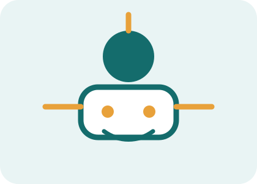

AI مددگار جو کام کے مراحل چلا سکتے ہیں
ایسے نظام جو صرف جواب نہیں دیتے بلکہ کام آگے بڑھاتے ہیں
AI مددگار ایسے نظام ہو سکتے ہیں جو ہدایت لے کر کئی مرحلوں میں کام مکمل کرنے کی کوشش کریں، جیسے معلومات تلاش کرنا، فہرست بنانا، پیغام تیار کرنا یا کام ترتیب دینا۔

AI مددگار کیا ہوتے ہیں؟
عام AI اکثر سوال کا جواب دیتی ہے۔ AI مددگار یا agent ایک مقصد لے کر کئی قدم اٹھانے کی کوشش کر سکتا ہے۔
مثال کے طور پر آپ کہیں: میرے لیے میٹنگ کا خلاصہ بنائیں، کاموں کی فہرست نکالیں، اور ایک follow-up پیغام تیار کریں۔
ایسا نظام جواب دینے کے ساتھ کام کو منظم بھی کر سکتا ہے۔
یہ کن کاموں میں مدد کر سکتے ہیں؟
ای میل کا خلاصہ، meeting notes، کاموں کی فہرست، تحقیق، رپورٹ کا خاکہ، customer support کے جواب، social media planning، اور basic workflow management۔
کچھ نظام tools کے ساتھ جڑ کر calendar، files، email یا website data سے بھی کام کر سکتے ہیں۔
لیکن اجازت، privacy اور انسانی منظوری بہت ضروری ہیں۔
عام AI اور AI مددگار میں فرق
عام AI ایک سوال کا جواب دیتی ہے۔ AI مددگار مقصد کو چھوٹے قدموں میں تقسیم کر سکتا ہے۔
مثال: صرف 'رپورٹ لکھو' کے بجائے یہ پہلے معلومات جمع کرے، پھر outline بنائے، پھر draft بنائے، پھر checklist دے۔
یہ فرق عملی کاموں میں بہت اہم ہے۔
خطرات اور احتیاط
اگر AI مددگار کو بہت زیادہ اختیار دے دیا جائے تو وہ غلط ای میل بھیج سکتا ہے، غلط فائل استعمال کر سکتا ہے یا غلط فیصلہ آگے بڑھا سکتا ہے۔
اس لیے اہم کاموں میں 'پہلے دکھائیں پھر منظور کریں' والا اصول بہتر ہے۔
مالی، قانونی، صحت یا ذاتی معلومات والے کام میں extra احتیاط ضروری ہے۔
بہتر استعمال کا طریقہ
کام واضح لکھیں، حدود بتائیں، مطلوبہ format بتائیں، اور جہاں ضروری ہو human approval شامل کریں۔
مثال: پہلے صرف draft بنائیں، send نہ کریں۔ پہلے خلاصہ دکھائیں، پھر میں approve کروں گا۔
اس طرح AI مددگار محفوظ اور مفید رہتا ہے۔
اہم نکات
- AI مددگار کئی مرحلوں میں کام کر سکتا ہے۔
- یہ صرف جواب نہیں، workflow بھی بنا سکتا ہے۔
- اہم کاموں میں انسانی منظوری ضروری ہے۔
- اختیار دینے سے پہلے privacy اور safety سوچیں۔
Quick Quiz
نیچے دیے گئے سوالات کے جواب دے کر اپنی سمجھ چیک کریں۔